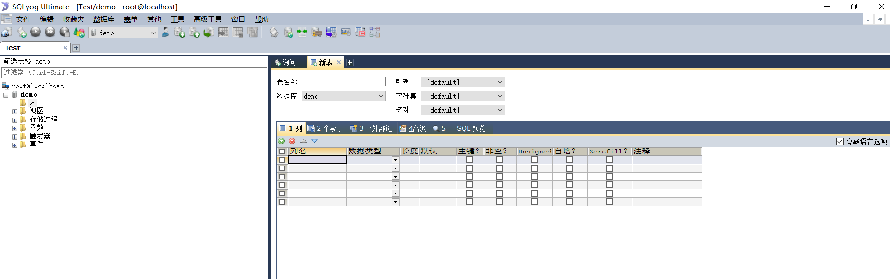
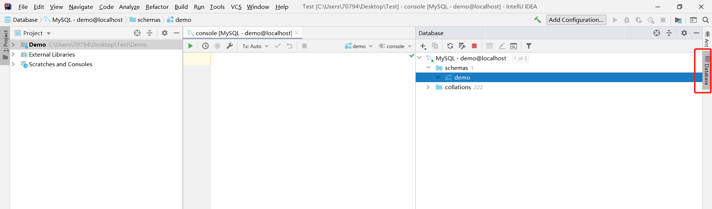

连接服务器
连接MySQL服务器通常有两种方式:
- 使用命令行连接
- 使用图形化页面工具连接
推荐大家使用命令行工具连接，而不是使用图形化页面工具。
方法一:使用命令行连接
- 在启动MySQL客户端之前，还需要将 MySQL 客户端添加到环境变量中。

在DOS命令行中执行命令，连接到MySQL服务器。
mysql -h 主机IP地址 -P 端口号 -u 用户名 -p回车 Enter Password:密码其中，如果服务器的主机是localhost的话，
-h 主机名可以省略；如果在配置时没有修改默认端口，使用的是3306,-P 端口号也可以省略。
方法二：使用图形化工具连接
常用的图形化工具有:
MySQL Workbench: 这个也是MySQL自带的工具，可以使用图形化页面来连接和操作数据库。注意：需要在安装MySQL时，选择安装WorkBench才能使用。


Navicat MySQL是最常见的一款用来操作MySQL数据的图形化页面工具（收费）

SQLYog 也是一款功能强大的图形化页面工具。

IDEA自带的数据库处理功能。
